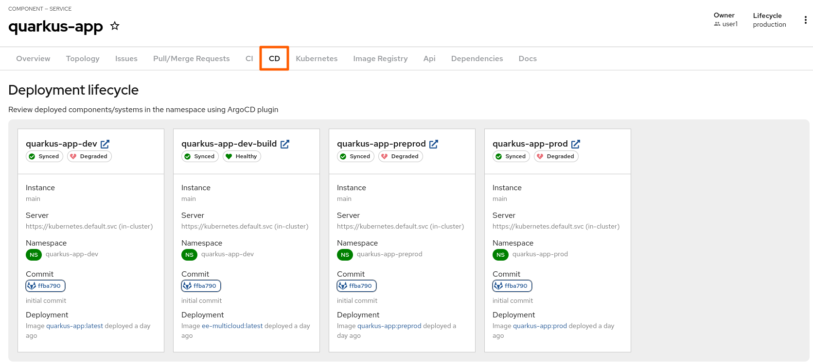
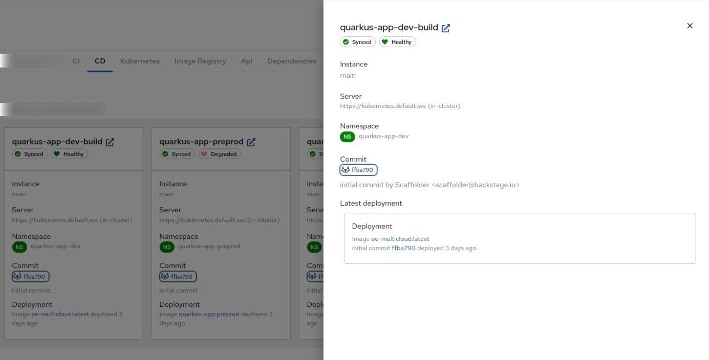
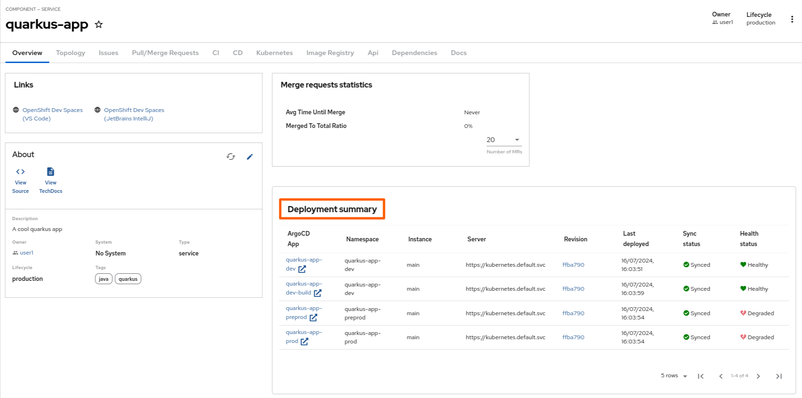
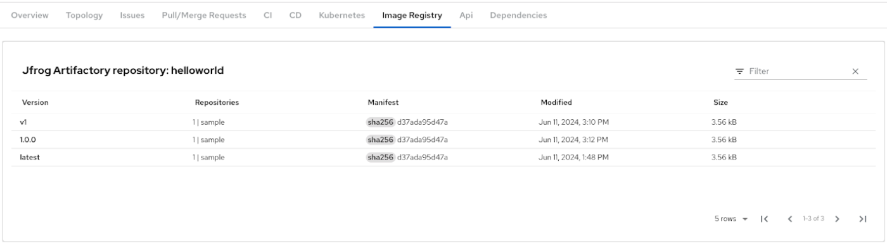
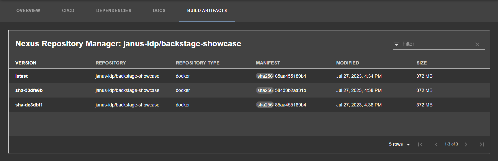
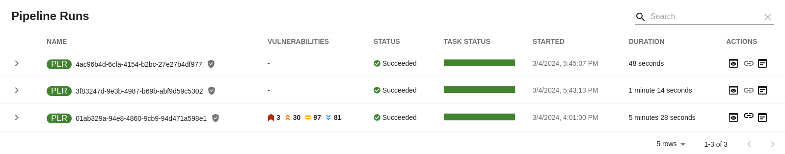
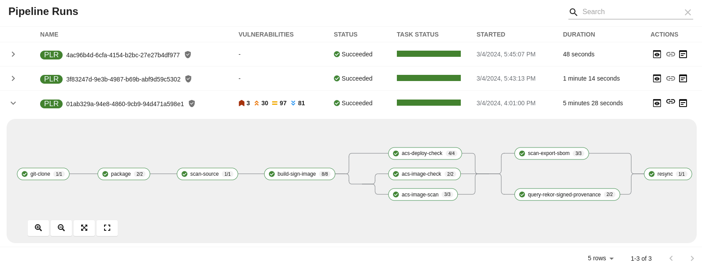
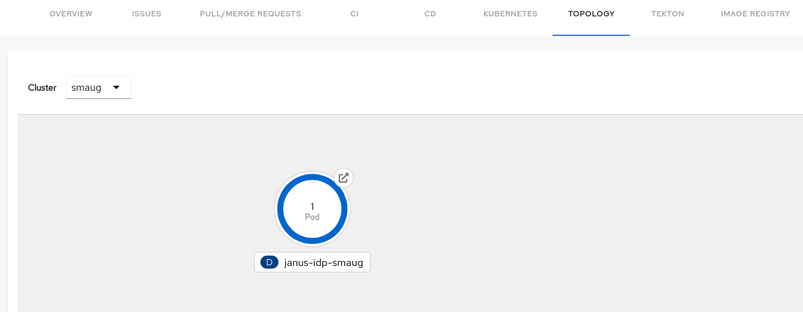
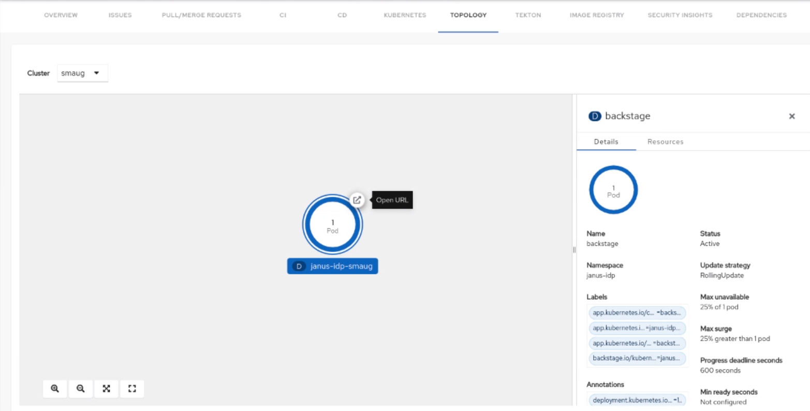

Using dynamic plugins in Red Hat Developer Hub
Using Red Hat Developer Hub plugins to access your development infrastructure and software development tools
Abstract
You can use Red Hat Developer Hub (RHDH) dynamic plugins to interact with your development infrastructure and software development tools.
1. Using Ansible plug-ins for Red Hat Developer Hub
Ansible plug-ins for Red Hat Developer Hub deliver an Ansible-specific portal experience with curated learning paths, push-button content creation, integrated development tools, and other opinionated resources.
These features are for Technology Preview only. Technology Preview features are not supported with Red Hat production service level agreements (SLAs), might not be functionally complete, and Red Hat does not recommend using them for production. These features provide early access to upcoming product features, enabling customers to test functionality and provide feedback during the development process.
For more information on Red Hat Technology Preview features, see Technology Preview Features Scope.
2. Use the Argo CD plugin
You can use the Argo CD plugin to visualize the Continuous Delivery (CD) workflows in OpenShift GitOps. This plugin provides a visual overview of the application’s status, deployment details, commit message, author of the commit, container image promoted to environment and deployment history.
Prerequisites
- You have enabled the Argo CD plugin in Red Hat Developer Hub RHDH.
Procedure
- Select the Catalog tab and choose the component that you want to use.
Select the CD tab to view insights into deployments managed by Argo CD.

Select an appropriate card to view the deployment details (for example, commit message, author name, and deployment history).

- Click the link icon ( ) to open the deployment details in Argo CD.
Select the Overview tab and navigate to the Deployment summary section to review the summary of your application’s deployment across namespaces. Additionally, select an appropriate Argo CD app to open the deployment details in Argo CD, or select a commit ID from the Revision column to review the changes in GitLab or GitHub.

Additional resources
3. Use the JFrog Artifactory plugin
The JFrog Artifactory plugin displays information about your container images within the JFrog Artifactory registry.
Prerequisites
- Your Developer Hub application is installed and running.
- You have enabled the JFrog Artifactory plugin.
Procedure
- Open your Developer Hub application and select a component from the Catalog page.
Go to the Image Registry tab.
The Image Registry tab contains a list of container images within your JFrog Artifactory repository and related information, such as Version, Repositories, Manifest, Modified, and Size.

4. Use Keycloak
The Keycloak backend plugin, which integrates Keycloak into Developer Hub, has the following capabilities:
- Synchronization of Keycloak users in a realm.
- Synchronization of Keycloak groups and their users in a realm.
After configuring the plugin successfully, the plugin imports the users and groups each time when started.
If you set up a schedule, users and groups will also be imported.
Procedure
- In Red Hat Developer Hub, go to the Catalog page.
- Select User from the entity type filter to display the list of imported users.
- Browse the list of users displayed on the page.
- Select a user to view detailed information imported from Keycloak.
- To view groups, select Group from the entity type filter.
- Browse the list of groups shown on the page.
- From the list of groups, select a group to view the information imported from Keycloak.
5. Use the Nexus Repository Manager plugin
For components in the Red Hat Developer Hub catalog, you can view build artifacts from the Nexus Repository Manager.
Prerequisites
- Your Developer Hub application is installed and running.
- You have installed the Nexus Repository Manager plugin.
Procedure
- Open your Developer Hub application and select a component from the Catalog page.
Go to the BUILD ARTIFACTS tab.
The BUILD ARTIFACTS tab contains a list of build artifacts and related information, such as VERSION, REPOSITORY, REPOSITORY TYPE, MANIFEST, MODIFIED, and SIZE.

6. Use the Tekton plugin
You can use the Tekton plugin to visualize the results of CI/CD pipeline runs on your Kubernetes or OpenShift clusters. The plugin allows users to visually see high level status of all associated tasks in the pipeline for their applications.
You can use the Tekton front-end plugin to view PipelineRun resources.
Prerequisites
- You have installed the Red Hat Developer Hub (RHDH).
- You have installed the Tekton plugin. For the installation process, see Installing and viewing plugins in Red Hat Developer Hub.
Procedure
- Open your RHDH application and select a component from the Catalog page.
Go to the CI tab.
The CI tab displays the list of PipelineRun resources associated with a Kubernetes cluster. The list contains pipeline run details, such as NAME, VULNERABILITIES, STATUS, TASK STATUS, STARTED, and DURATION.

Click the expand row button besides PipelineRun name in the list to view the PipelineRun visualization. The pipeline run resource includes tasks to complete. When you hover the mouse pointer on a task card, you can view the steps to complete that particular task.

7. Use the Topology plugin
Topology is a front-end plugin that enables you to view the workloads as nodes that power any service on the Kubernetes cluster.
7.1. Enable users to use the Topology plugin
The Topology plugin is defining additional permissions. When Authorization in Red Hat Developer Hub is enabled, to enable users to use the Topology plugin, grant them:
-
The
kubernetes.clusters.readandkubernetes.resources.read,readpermissions to view the Topology panel. -
The
kubernetes.proxyusepermission to view the pod logs. -
The
catalog-entityreadpermission to view the Red Hat Developer Hub software catalog items.
Prerequisites
Procedure
Add the following permission policies to your
rbac-policy.csvfile to create atopology-viewerrole that has access to the Topology plugin features, and add the role to the users requiring this authorization:g, user:default/<YOUR_USERNAME>, role:default/topology-viewer p, role:default/topology-viewer, kubernetes.clusters.read, read, allow p, role:default/topology-viewer, kubernetes.resources.read, read, allow p, role:default/topology-viewer, kubernetes.proxy, use, allow p, role:default/topology-viewer, catalog-entity, read, allow
kubernetes.clusters.readandkubernetes.resources.read, read, allow- Grants the user the ability to see the Topology panel.
kubernetes.proxy, use, allow- Grants the user the ability to view the pod logs.
catalog-entity, read, allow- Grants the user the ability to see the catalog item.
7.2. Use the Topology plugin
You can use the Topology plugin to view the workloads such as deployments or pods as nodes on the Kubernetes cluster.
Prerequisites
- Your Red Hat Developer Hub instance is installed and running.
- You have installed the Topology plugin.
- You have enabled the users to use the Topology plugin.
Procedure
- Open your RHDH application and select a component from the Catalog page.
Go to the TOPOLOGY tab and you can view the workloads such as deployments or pods as nodes.

Select a node and a pop-up appears on the right side that contains two tabs: Details and Resources.
The Details and Resources tabs contain the associated information and resources for the node.

Click the Open URL button on the top of a node.

Click the Open URL button to access the associated Ingresses and run your application in a new tab.